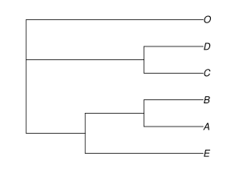

Installation
Install Julia
Julia is a high-level and interactive programming language (like R or Matlab), but it is also high-performance (like C). To install Julia, follow instructions here. For a quick & basic tutorial on Julia, see learn x in y minutes.
Editors:
- Visual Studio Code provides an editor and an integrated development environment (IDE) for Julia: highly recommended! Positron is a great (and similar) alternative.
- Install the Julia extension in VS Code or Positron.
- We can also run Julia in a Pluto notebook. Pluto.jl is a great to get started with Julia.
Julia code is just-in-time compiled. This means that the first time we run a function, it will be compiled at that moment. Future calls to the function will be much faster. Trying out toy examples for the first calls is a good idea.
Install PhyloNetworks
To install the package, type inside Julia:
using Pkg
Pkg.add("PhyloNetworks")If you already installed the package and want the latest registered version, do this to update all of your packages:
Pkg.update()It is important to update the package regularly as it is undergoing constant development. Join the google group for updates here.
Pkg.update() will install the latest registered version, but there could be other improvements in the master branch of the repository. If you want to update to the latest unregistered version of the package, you can do Pkg.add(PackageSpec(name="PhyloNetworks", rev="master")) just beware that the latest changes could be not as robust. If you want to go back to the registered package, you can do Pkg.free("PhyloNetworks").
Similarly, you can pin a version of the package Pkg.pin("PhyloNetworks") so that Pkg.update() will not modify it. You can always free a pinned package with Pkg.free("PhyloNetworks"). More on package management here.
The PhyloNetworks package has dependencies like NLopt and DataFrames (see the Project.toml file for the full list), but everything is installed automatically.
The companion package PhyloPlots has utilities to visualize networks, and for interoperability, such as to export networks to R (which can then be plotted via R). To install:
using Pkg
Pkg.add("PhyloPlots")PhyloPlots depends on PhyloNetworks, and has further dependencies like RCall
Test example
To check that your installation worked, type this in Julia to load the package. This is something to type every time you start a Julia session:
using PhyloNetworks;This step can also take a while, to pre-compile the code (after a package update for instance). Here is a very small test for the installation of PhyloNetworks.
julia> net = readnewick("(A,(B,(C,D)));");julia> tiplabels(net)4-element Vector{String}: "A" "B" "C" "D"
You can see a list of all the functions with
varinfo(PhyloNetworks)and press ? inside Julia to switch to help mode, followed by the name of a function (or type) to get more details about it.
Julia types
Each object in Julia has a type. We show here small examples on how to get more info on an object. If we want to know the type of a particular object, use typeof For example, let's read a list of gene trees. First, we need the file name.
julia> raxmltreefile = joinpath(dirname(dirname(pathof(PhyloNetworks))), "examples","raxmltrees.tre")"/home/runner/work/PhyloNetworks.jl/PhyloNetworks.jl/examples/raxmltrees.tre"julia> typeof(raxmltreefile)String
The object raxmltreefile is a basic string (of letters). Let's create our list of gene trees by reading this file.
julia> genetrees = readmultinewick(raxmltreefile); # the semicolon suppresses info on the resultjulia> typeof(genetrees)Vector{HybridNetwork} (alias for Array{HybridNetwork, 1})
which shows us that genetrees is of type Vector{HybridNetwork}, that is, a vector containing networks. If we want to know about the attributes the object has, we can type ? in Julia, followed by HybridNetwork for a description.
Typing varinfo() will provide a list of objects and packages in memory, including raxmltreefile and genetrees that we just created.
Quick start
Here we could check the length of our list of gene trees, as a sanity check to make sure we have all gene trees we expected, and check that the third tree has whatever taxon names we expected:
julia> length(genetrees)30julia> tiplabels(genetrees[3])6-element Vector{String}: "E" "A" "B" "C" "D" "O"
We can also see some basic information on the third gene tree, say:
julia> genetrees[3]HybridNetwork, Rooted Network 9 edges 10 nodes: 6 tips, 0 hybrid nodes, 4 internal tree nodes. tip labels: E, A, B, C, ... ((E:0.015,(A:0.006,B:0.006):0.003):0.041,(C:0.006,D:0.0):0.041,O:0.052);
To visualize any of these gene trees, use the PhyloPlots package:
using PhyloPlots
plot(genetrees[3]); # tree for 3rd gene
We can also read a network from a newick formatted string, and, for example, print a list of its edges:
julia> newickstring = "(A,((B,#H1),(C,(D)#H1)));";julia> net = readnewick(newickstring);julia> printedges(net)edge parent child length hybrid ismajor gamma containroot i_cycle 1 -2 1 false true 1 true -1 2 -4 2 false true 1 true -1 3 -4 3 true false true -1 4 -3 -4 false true 1 true -1 5 -5 4 false true 1 true -1 6 3 5 false true 1 false -1 7 -5 3 true true true -1 8 -3 -5 false true 1 true -1 9 -2 -3 false true 1 true -1
We see that the edges do not have branch lengths, and the hybrid edges do not have gamma (inheritance) values. We can set them with
julia> setlength!(net.edge[1], 1.9)julia> setgamma!(net.edge[3], 0.8)julia> printedges(net)edge parent child length hybrid ismajor gamma containroot i_cycle 1 -2 1 1.900 false true 1 true -1 2 -4 2 false true 1 true -1 3 -4 3 true true 0.8 true -1 4 -3 -4 false true 1 true -1 5 -5 4 false true 1 true -1 6 3 5 false true 1 false -1 7 -5 3 true false 0.2 true -1 8 -3 -5 false true 1 true -1 9 -2 -3 false true 1 true -1
where 1 and 3 correspond to the position of the given edge to modify in the list of edges. We can only change the γ value of hybrid edges, not tree edges (for which γ=1 necessarily). Such an attempt below will cause an error with a message to explain that the edge was a tree edge:
setgamma!(net.edge[4], 0.7)
# should return this:
# ERROR: cannot change gamma in a tree edge